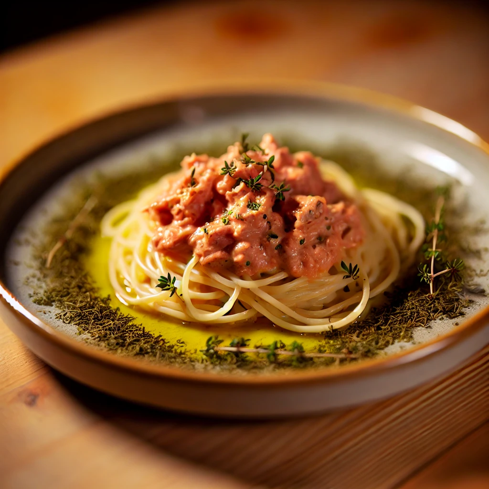

Tuna Spaghetti

Description
Ingredients for 2 Portions:
- 250g pasta (spaghetti)
- 1 onion
- 1 can of tuna, without oil
- 250ml sweet cream
- Tomato paste
- Herbs of Provence
- Salt
- Oil
Preparation:
- Cook the spaghetti al dente.
- Dice the onion finely and sauté it in a pot with some oil, then add the tuna.
- Add the cream.
- Stir in the tomato paste until the sauce has a nice pink color.
- Add plenty of Herbs of Provence and season with salt.
- If necessary, add a bit of water to adjust the sauce consistency.
Alternative:
Instead of tuna, you can use zucchini and salmon.